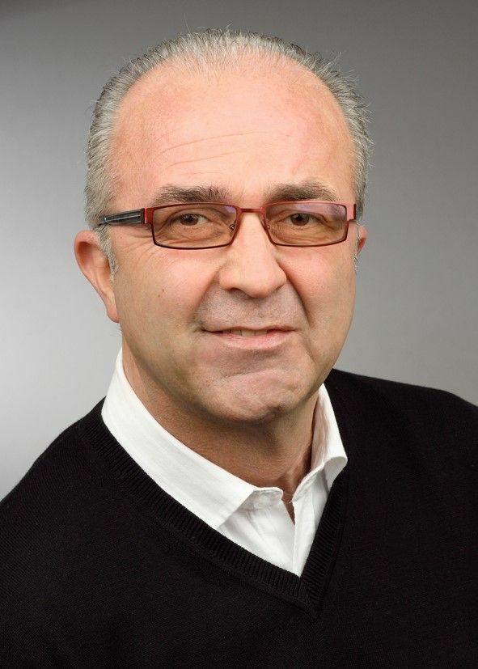

Elektrofachbetrieb · Flörsheim-Dalsheim
Der direkte
Draht
zur Lösung.
JK Elektrotechnik Küchler beschreibt Planung und Beratung, Installation und Inbetriebnahme, Wartung und Instandhaltung sowie Produktverkauf.
Leistungen ansehen ↓14-köpfiges Team laut Website+49 6243 905252

Leistungen
Vom Plan bis zum laufenden Betrieb.
Die neue Seitenstruktur macht die öffentlich dargestellten Servicewege leicht auffindbar. Sie ergänzt keine unbestätigten Spezialgebiete oder Projektversprechen.
Planung & Beratung
Installation & Inbetriebnahme
Wartung & Instandhaltung
Produktverkauf
Team
Kompetenz mit klaren Ansprechpartnern.
Die öffentliche Teamseite benennt die operativen Rollen direkt. Das Konzept ordnet diese nachvollziehbar, ohne persönliche Details oder nicht belegte Qualifikationen zu ergänzen.
GeschäftsführungJürgen Küchler
Technischer LeiterSiegfried Heyser
Kaufmännischer LeiterRainer Klein
NachwuchsLennard Küchler
Kontakt
Die Anfrage
beginnt
persönlich.
Der öffentlich sichtbare Telefonkontakt steht im Konzept direkt zur Verfügung. Anschrift, konkrete Terminabläufe und Rechtstexte werden vor der externen Veröffentlichung abgestimmt.
Telefon+49 6243 905252
E-Mailinfo@kuechlerelektro.de
AdresseWeitere Angaben werden im Rahmen der finalen Projektabstimmung ergänzt.
Gerne stimmen wir die Details in einem persönlichen Gespräch mit Ihnen ab.
Unverbindliche Anfrage
Lassen Sie uns
ins Gespräch kommen.
Schildern Sie kurz Ihr Anliegen. Über „Anfrage per E-Mail vorbereiten“ öffnet sich Ihr E-Mail-Programm mit der öffentlich angegebenen Geschäftsadresse als Empfänger.